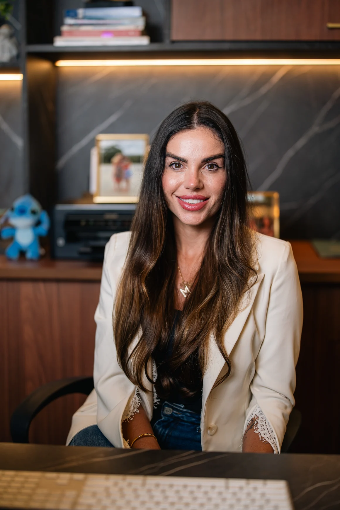
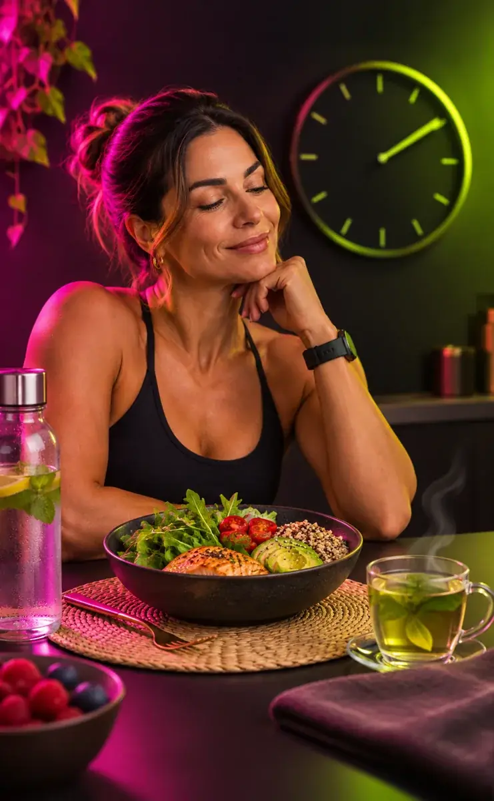

Ativação Metabólica
Entenda hábitos que influenciam o uso de energia pelo organismo e aprenda a organizar a alimentação de maneira prática.
COM DRA. MARI FERRI
Você não falhou nas dietas.As dietas falharam com você.
O Magra 7D é um desafio online com a nutricionista Mari Ferri para ajudar você a organizar sua rotina e buscar resultados com orientação — sem academia obrigatória e sem passar fome.
🔒 Pagamento pela Hotmart • 100% online
A verdade que ninguém te conta
A maioria dos programas pede para cortar calorias, passar fome e viver na academia. Com tantas restrições, fica difícil manter uma rotina alimentar consistente — e não é raro recuperar o peso perdido.
A Dra. Mari Ferri propõe outro caminho: uma sequência de sete dias de orientação nutricional, alimentação organizada e estratégias para conhecer melhor seu metabolismo.
O segredo é a sequência: preparação, um passo por dia e orientação ao vivo para ajudar você a construir hábitos mais viáveis.
Não é sobre mais uma segunda-feira. É sobre começar com um plano.Magra 7D • preparação, orientação e acompanhamento por sete dias.
Os quatro pilares do desafio
Os temas do Magra 7D organizados em uma jornada de 7 dias — com explicações e orientações para aplicar na rotina.
Entenda hábitos que influenciam o uso de energia pelo organismo e aprenda a organizar a alimentação de maneira prática.
O objetivo é sair da lógica de restrições extremas e construir uma rotina mais sustentável. Nenhum método garante impedir o reganho de peso.
Uma sequência de conteúdos, com preparação cinco dias antes e um encontro ao vivo por dia com a nutricionista.
Conheça o papel do sono, da alimentação e da rotina na saúde metabólica. “Reset hormonal” é o nome da abordagem na campanha, não uma garantia de alteração hormonal.
UMA NOVA FORMA DE COMEÇAR
São 7 dias com orientação da Dra. Mari Ferri, planejamento alimentar e uma rotina possível — sem dietas malucas ou academia obrigatória.
QUERO PARTICIPARConheça o desafio
O Magra 7D é um evento online intensivo criado pela nutricionista Dra. Mari Ferri para acompanhar mulheres durante sete dias de orientação sobre alimentação e rotina.
Você recebe o material de preparação cinco dias antes, participa de uma live diária com a Mari e conhece estratégias de alimentação, detox e jejum intermitente com orientações de segurança.

Entenda o seu corpo
O peso pode variar em uma semana por diversos motivos, incluindo mudanças no consumo alimentar, na água corporal e na rotina. Isso não significa que toda variação seja perda de gordura.
Por isso, o Magra 7D reúne orientação nutricional, organização dos hábitos e acompanhamento ao vivo. A proposta é aprender estratégias possíveis para o dia a dia, sem soluções mágicas.
Jejum e mudanças alimentares exigem avaliação individual, especialmente para quem tem condição clínica, usa medicamentos, está grávida ou amamentando.
Os conteúdos que fazem parte da jornada
O desafio combina orientações sobre alimentação, estratégias detox e jejum intermitente. Tudo deve respeitar as características de cada participante.
Um roteiro de sete dias para organizar escolhas alimentares e acompanhar, passo a passo, as atividades propostas pela nutricionista. Resultados são individuais.
Entenda como uma alimentação organizada, com escolhas adequadas, pode contribuir para o bem-estar. O organismo já possui mecanismos naturais de eliminação de resíduos; não é preciso prometer “limpeza” milagrosa.
Aprenda os princípios do jejum intermitente, seus limites e os cuidados necessários. Jejum não é indicado para todas as pessoas e não deve ser feito sem avaliação adequada quando houver riscos.

Jejum intermitente com orientação
Aprenda os princípios do jejum intermitente com segurança, orientação nutricional e atenção à sua rotina. Conheça os cuidados necessários, os sinais de desconforto e quando essa estratégia não é indicada.
O jejum não é adequado para todas as pessoas, especialmente sem avaliação individual em casos de diabetes, gravidez, amamentação, histórico de transtornos alimentares ou uso de determinados medicamentos.
CONHEÇA O DESAFIOTudo em uma única jornada
Uma experiência online de sete dias, com material de preparação antecipado e orientações que você pode rever durante um ano.
Oferta especial de Black • início em 23/11/2026
ou R$ 67,00 à vista
Checkout seguro via Hotmart
Mais do que recomeçar na segunda
Você não precisa mais juntar dicas soltas da internet. O desafio organiza uma sequência prática, com preparação antecipada e acompanhamento ao vivo para ajudar a construir uma rotina possível.
As orientações abordam alimentação, organização do dia a dia e estratégias que devem respeitar suas necessidades individuais.
Material disponibilizado 5 dias antes do início.
Um encontro ao vivo por dia durante o desafio.
Conteúdos de alimentação, detox e jejum com orientação.
Acesso ao conteúdo por 1 ano.
No celular, as etapas aparecem na horizontal: deslize para ver a etapa 1, 2, 3 e 4.
Perguntas frequentes
A turma da campanha Black 2026 começa em 23 de novembro. A experiência é 100% online.
Não há academia obrigatória. O foco está na organização da alimentação e da rotina, com orientação da nutricionista.
O material de preparação é disponibilizado 5 dias antes do início, conforme a programação informada pela campanha.
A oferta informa acesso ao conteúdo por 1 ano.
Não. A referência a “até 4 kg” é uma possibilidade apresentada nos materiais da campanha, não uma garantia. O resultado varia conforme a pessoa.
Nem toda estratégia alimentar é adequada para todas as pessoas. Consulte um profissional de saúde que acompanhe seu caso antes de fazer jejum ou mudanças importantes na alimentação.
“Primeira vez que vejo uma profissional ver exames com tanta atenção, muito obrigada Mari... parece um sonho isso.”
Acompanhamento cuidadoso“Bom dia! Foi maravilhoso ontem. Estou aguardando chegar a minha vez! Parabéns por compartilhar seus conhecimentos!”
Aulas e conhecimento“Eu não te agradeci direito, mas preciso dizer que esse desafio mudou minha vida.”
Experiência pessoal“Vc é demais Mari! Que Deus abençoe vc, sua saúde e sua família. Estou no desafio, lança o próximo q estou dentro.”
Vontade de participar novamente“Já te achava incrível, depois dessa live percebi que é ainda mais e tem um coração lindo... Gratidão!!”
Experiência com a live“Graças ao desafio meu intestino está funcionando perfeitamente.”
Relato sobre bem-estar“Melhor live da vida. Fico chocada com seu conhecimento. Obrigada.”
Opinião sobre as aulas“Nunca participei de um desafio com tanta qualidade! Muito obrigada!”
Qualidade do desafio